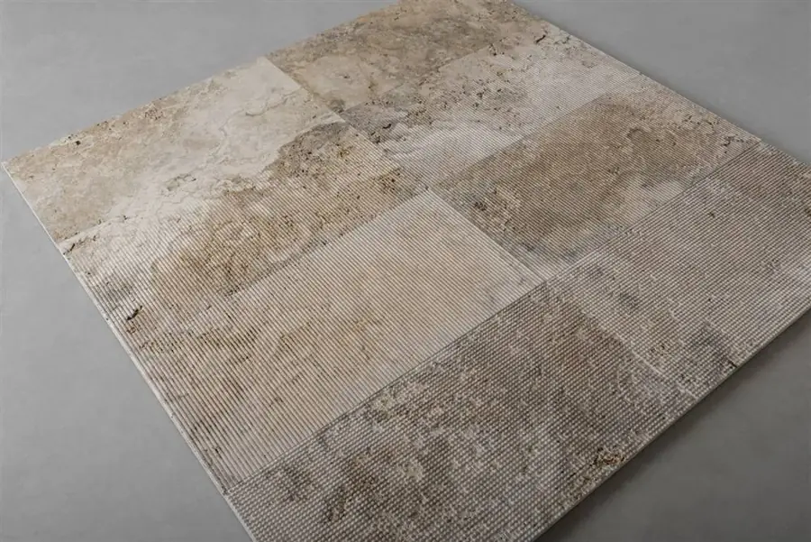
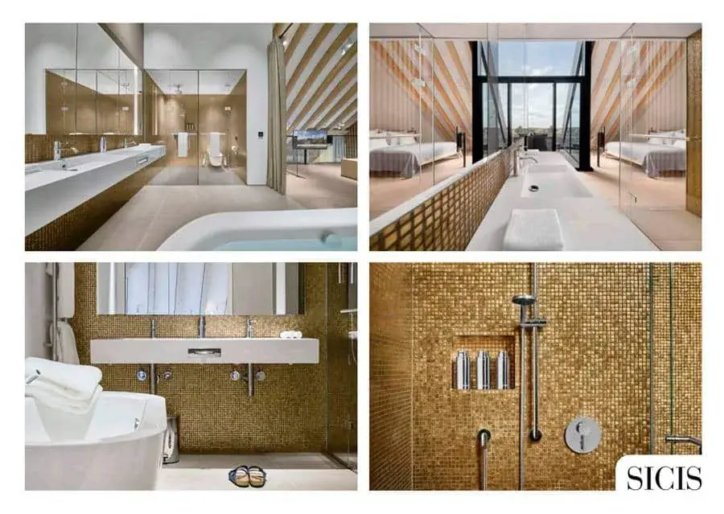
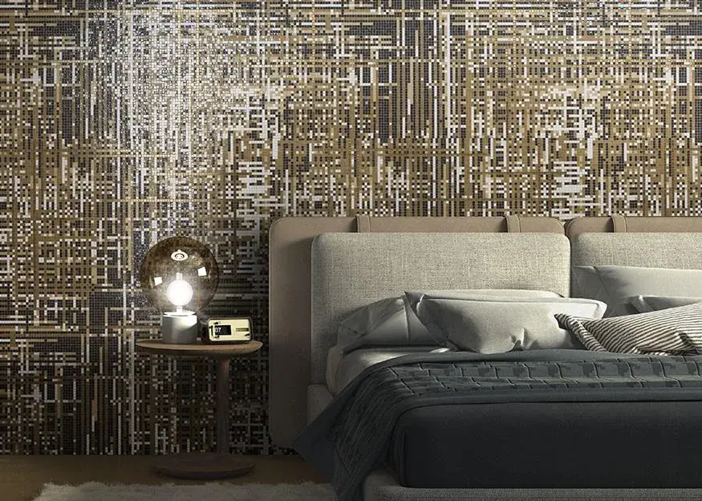

Spas.
Colaboramos en la puesta en marcha de spas, principalmente de hoteles, en diferentes partes del mundo: Barcelona, Dubái, París, Sevilla, Mallorca, Ibiza…
El tipo de suelos y paredes que los spas necesitan, poseen altos coeficientes de fricción y máxima resistencia a la humedad.
Una de sus ventajas es que, al usarse materiales que no son porosos y siempre están en contacto con el agua, no son costosos de limpiar.
Usándose, normalmente, materiales porcelánicos, gracias a sus características técnicas, se pueden trabajar distintos tipos de superficies como paredes y suelos, en contacto con el agua, y jugar con la gráfica buscando estéticas personales y originales o con los volúmenes y los grosores.
Marcas en el showroom
- Mayor
- Emac
- Orac
- Natur
Y si lo que buscas no está en exposición, lo buscamos en la Bagnoteca.
Novedades 20263


SpasPavimentos y revestimientos de piedra natura para spas - Wellness y Spa Sfumato - Vaselli
Este sistema modular de piedra natural permite proyectar superficies dinámicas mediante cuatro tipologías combinables: lisa, acanalada, de transición y cuadriculada.
Tramas talladas en el material que establecen una secuencia visual rítmica, integrando la veta natural en un juego de luces y sombras que aporta textura.
Su versatilidad técnica permite alternar trazados lineales o aleatorios sobre el mismo material, ofreciendo libertad total para diseñar espacios personalizados y relieves dinámicos que se adaptan a cualquier formato.


SpasMosaicos para hoteles y baños turcos - Sicis
Sicis lanza su colección de mosaicos más exclusiva. Auténticas piezas de joyería, pensadas al milímetro y hechas con un gusto y una delicadeza que dota de la mayor personalidad y prestigio a cada estancia donde se usa.
Es el caso del lujoso Resort Lanserhor (Alemania), los arquitectos del cual confiaron todo su proyecto a la marca.
Sus mosaicos revisten varias de las zonas comunes y privadas del complejo: desde las lujosas habitaciones, las piscinas, las saunas hasta las cabinas de ducha y los baños turcos del spa.
En un tono metalizado entre cobre y dorado, los mosaicos generar un ambiente de relajación y tranquilidad con un punto de sofisticación y elegancia inigualables.


SpasPavimentos y revestimientos mosaicos para interiories y exteriores - MosaicoPiu
La firma italiana Mosaico+ te propone una nueva y amplia colección de azulejos modulables (10×10), en los que el protagonismo lo tiene el color, su versatilidad para incorporarlos en cualquier espacio, junto con la posibilidad de instalarlos tanto en interiores como en exteriores.
Una colección óptima para cocinas, duchas y piscinas, en donde gracias a la diversidad de opciones de esta marca, puedes jugar con los colores y mulitutd de tonos, así como de volúmenes, de cara a diseñar interesantes y armoniosas composiciones visuales.